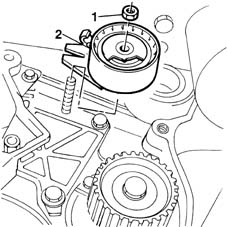
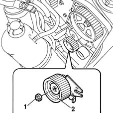

1032C10 MOVING timing TENSIONER - R.R. with timing belt/chain removed
- Path
- Procedures > 10 ENGINE UNIT > 1032 TIMING SYSTEM > 1032C timing system tensioners > 1032C10 MOVING timing TENSIONER - R.R. with timing belt/chain removed
- Kind
- repair procedure (removal / refitting; the operation number is the code)
- Applies to
- all engines; all production periods
- Interactive page
- https://sloeber94.github.io/elrnDB-fMltpl/en/#/2891227
Applies to: engines: 1.6 16v; all production periods
 Removing
Removing
 Refitting
Refitting1. Undo the retaining nut.
2. Remove the mobile tensioning device.

Applies to: engines: 1.6 16v; all production periods
Refitting
RemovingFit the mobile tensioning device.
Tighten the retaining nut.
Applies to: engines: 1.9 JTD 8V; all production periods
Removing
Refitting1. Unscrew the retaining nut.
2. Remove the mobile timing belt tensioner.

Applies to: engines: 1.9 JTD 8V; all production periods
Refitting
RemovingFit the mobile timing belt tensioner.
Screw in the retaining nut without tightening.